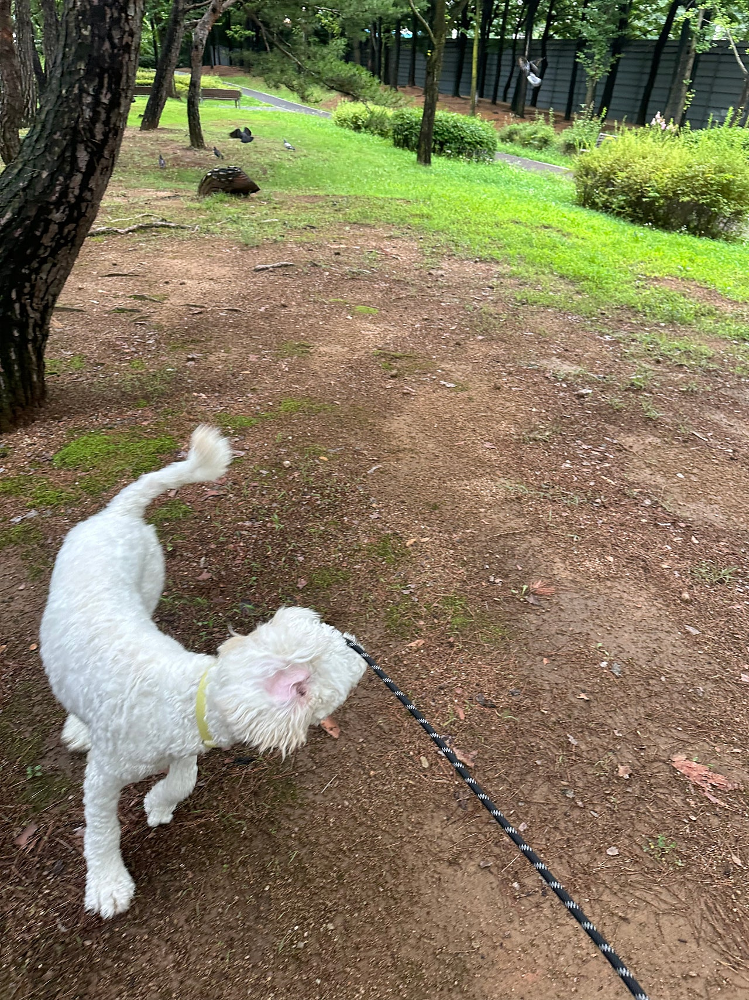

산책중만난 비둘기 덕분에,,,, 날아라 머랭이!!!!!!!



날아라 머랭이,,이제 막 10개월차 된 세상궁금한게 많은스탠다드푸들 머랭이!!!센터에만 있으면 답답해 하는 아이들ㅠㅠ소형견도 마찬가지지만대형견아이들은 유독 더 답답해하고우울해해서 자주자주 산책해주는데우리 머랭이,,, 힘이 너무 쎼,,너무 착하고 순한 머랭이지만 그래도 대형견이기에혹시모를 사고를 대비해사람들 있을땐 줄을 최대한 짧게 하고 있어용없을때만 조금 길게 해서 편하게 뛰어놀게끔!!덕분에 제 팔은 떨어져 나갔답니다..ㅎㅎㅎㅎ우리 머랭이 얼른 좋은 가족을 만나서매일매일 하루 두세번씩 산책하쟈~~~!!!!!0505-464-1004
댓글 29
머랭이 팔 운동 코치라는 느낌이 사진이랑 글에 다 있어요.
지금처럼 건강하고, 그다음은 좋은 가족이 이어 주길.
줄 길이 조절까지 적은 글이라 산책이 대충이 아니에요.
좋은 가족 만나길.
날아라 머랭이, 비둘기 만난 산책 사진이 글의 전부예요.
머랭, 아프지 말고 잘 자라.
없을 때만 줄을 늘려 뛰어놀게 한다는 배려가 글에 있어요.
머랭, 따뜻한 집에서 오래 사랑받길.
세상 궁금한 게 많다는 말이 비둘기 쫓는 장면이랑 연결돼요.
좋은 가족, 맛있는 밥, 포근한 잠자리 만나길.
좋은 가족 만나 하루 두세 번 산책하자는 마지막이 이 아이한테 필요해 보여요.
머랭, 좋은 사람만 만나자.
소형견도 답답하지만 대형견은 더하다는 비교가 머랭 글의 이유예요.
외롭지 않게, 좋은 손에서 자라길.
이제 막 10개월 된 스탠다드푸들이라는 기본 정보가 체구랑 맞아요.
기다리는 시간이 짧았으면 좋겠어요.
착하고 순한데도 힘이 세서 사람 많을 땐 줄을 짧게 한다는 이야기가 구체해요.
댓글로나마 쓰다듬고 갑니다. 잘 자라.
센터에만 있으면 대형견이 더 답답해한다는 설명, 읽고 고개가 끄덕여져요.
아프지 말고, 밥 잘 먹고, 잘 자라.
날아라 머랭이라는 말이 점프하는 사진이랑 똑같아요.
10개월 스탠다드푸들, 이미 대형견 힘이 사진에 보여요.
점프한 컷 보고 제목을 다시 읽으니 더 웃겨요.
순한 성격과 센 힘이 같이 적혀 있어서 사진이 더 이해돼요.
산책 중 비둘기를 만나 날아갈 듯한 머랭, 제목이 사진이랑 같아요.
덕분에 팔이 떨어져 나갔다는 문장에서 웃었어요. 힘이 정말 세군요.
10개월이면 아직 어린데 이미 세상이 궁금해 보이네요.
비둘기 덕분에 생긴 비행 장면, 궁금증 많은 10개월답네요.
대형견 머랭, 센터 답답함을 산책으로 푸는 일기 맞아요.